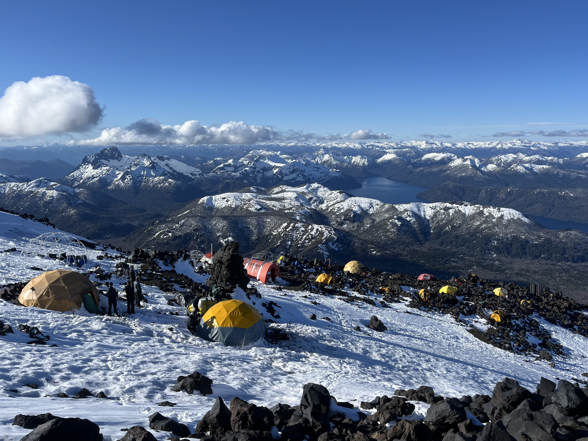

Others
Nature in images
I've always loved the mountains and the sea. I like skiing. I could say I also like surfing but I don't think I've earned the right to say that (yet!). Here are some pics I've taken in some of the many beautiful corners my home country has.
Volcan Lanín, Argentina, 2024.

Chapadmalal, Argentina, over the years.